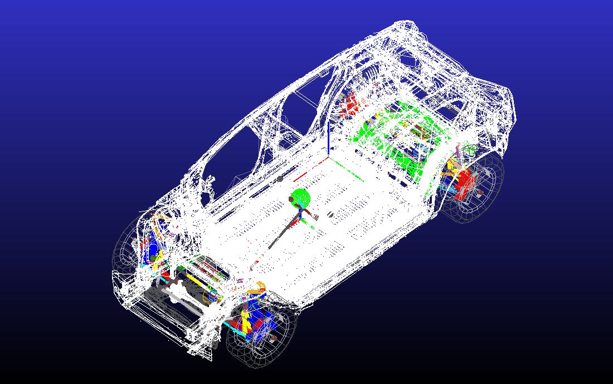

Now
01/2026
01/2026

Real-Time Flexible Car Body Simulation
Development and validation of reduced finite element body-in-white models for real-time driving simulator applications, focusing on vehicle dynamics and structural behavior.